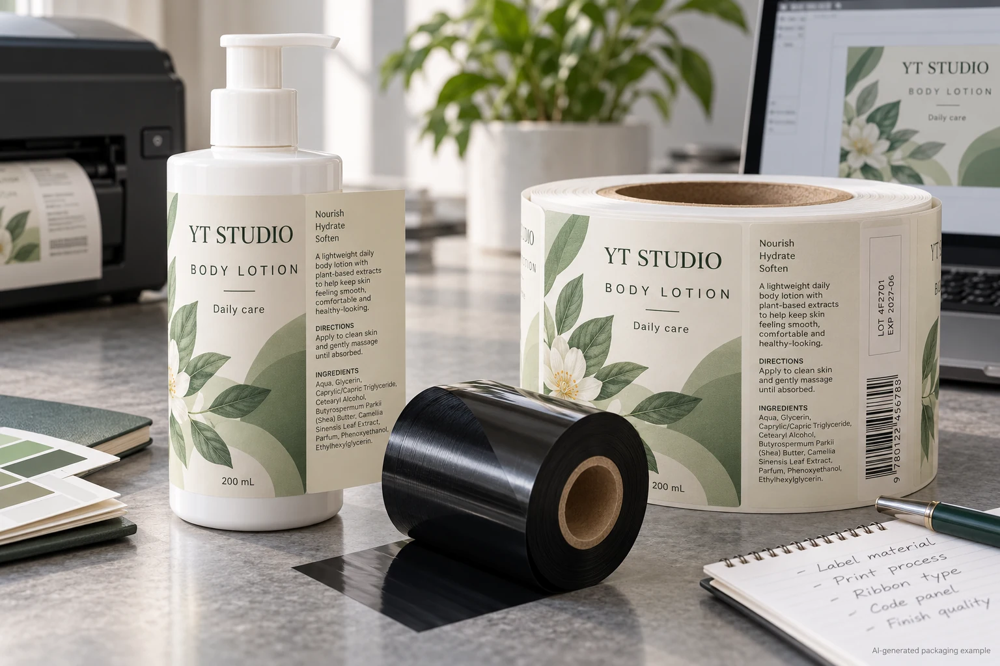
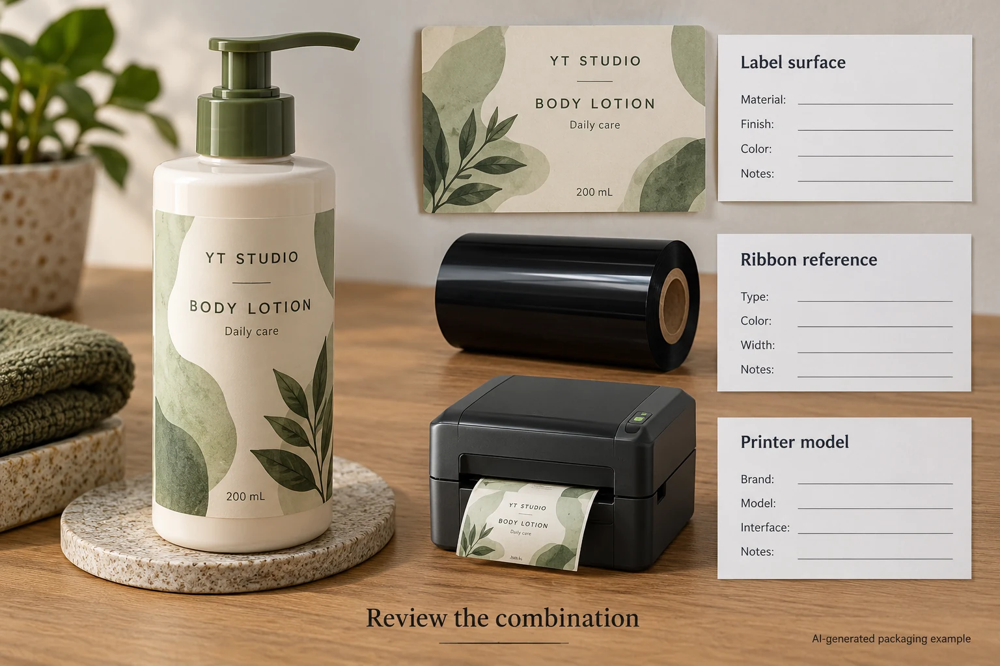

A packing team has an approved cosmetic label and a place reserved for the batch code. The printer has a ribbon in stock. The missing detail is whether that ribbon, the exposed label surface and the actual printer will produce an acceptable code together.
Treat the label surface, ribbon and printhead as one proposed combination. Ask the relevant suppliers and the coding operator to identify the materials, run a representative comparison and agree what must be readable after the handling that matters to the job. A ribbon family name alone does not release the label.

This is a hypothetical procurement scenario. It is not a claim that YT Labels supplies coding equipment or any particular ribbon, and it does not prescribe a legal code format.
Start with the part that receives the code
The white rectangle on an artwork proof is a location, not a surface specification. It could be bare label stock, an inked region, a varnish or a laminate. Find out what the printhead will contact on the finished construction. Ask the converter to identify the face material, any coating and the exact version of the sample.
The existing batch-code panel guide addresses who codes, where the panel sits and how the assembled bottle is presented. This guide adds a narrower question: how does the operator select and qualify the ribbon–surface–printer combination for a thermal-transfer operation?
An Avery Dennison technical bulletin illustrates how thermal-transfer material and ribbon families are paired and recommends a compatibility test that considers the printer settings. Its examples concern its own materials and equipment conditions. They are a useful starting point for questions, not a table of guaranteed choices for every cosmetic label.
Ask what the printer and ribbon are designed to work with
Identify the printer and printhead arrangement, ribbon reference, width and which side carries the coating. Confirm loading and operating instructions with the equipment supplier. A ribbon that fits a core does not automatically match the printhead, receiver surface or intended use.
Wax, wax/resin and resin describe broad families. Within each family, actual formulations and intended receivers differ. A paper stock identified for one combination may not behave like a coated film, and the printed finish on the coding panel can change the surface again. Do not order by material name alone.
For the practical comparison, obtain the supplier's proposed combination and its documented scope. Ask whether the actual printed and finished coding panel was represented. If the proposal says only “film labels”, request the exact face and exposed finish before treating it as project evidence.
Build a combination record that can be repeated
| Field | Record | Why it matters |
|---|---|---|
| Label | Job, version, face stock and coating at the coding panel | Identifies the actual receiver |
| Ribbon | Supplier, product reference, width and coating orientation | Prevents an unrecorded ribbon substitution |
| Printer | Model, printhead and operator-approved setup record | Ties the result to the equipment used |
| Code | Approved example content, size and placement | Makes the result assessable against the job |
| Sample | Finished construction, preparation and relevant pack stage | Avoids mistaking a loose unfinished sample for the production pack |
| Review | Reading and handling checks agreed by the responsible team | Identifies what the comparison does and does not establish |
| Decision | Owner, unresolved items and the combination accepted | Prevents a pass from becoming a blanket approval |

First complete the material and equipment identities. Use representative samples and have the operator run the agreed comparison under its own approved procedure. Record the settings and actual results; do not copy a numerical darkness or speed from another machine and present it as a safe universal recipe.
Then compare the code with the approved content and the team's reading requirement. If an encoded symbol is involved, agree whether a formal verification method or equipment is required. A phone or scanner returning some data is not necessarily evidence that the right data or print quality meets the receiving system's requirement.
Finally, review the relevant later handling. A dry finger rub, exposure to a product formulation and rubbing against a carton divider are different events. Agree any method, counterface, conditions and acceptance criterion with the technical owner; this article does not set a mandatory number of rubs or guarantee resistance.
Two projects can make different choices
A hypothetical carton-label job has a supplier-identified thermal-transfer receiver and a ribbon already assessed with the operator's printer. The next useful step may be to confirm the exact revision and obtain a representative sample of the current job, rather than changing the ribbon simply because a different family sounds stronger.
Another hypothetical bottle project puts variable text on a glossy protective finish that has never been included in the coding assessment. It may need a different coding panel, a compatible ribbon candidate or another approved code location. Each route affects artwork or operations differently. Ask the parties for actual implications before assuming that one option is cheaper or faster.
Stop before production release if the coding surface is unidentified, the printer/ribbon pairing is unconfirmed, or the sample does not represent the later handling requirement. Record the owner and next decision. A dark-looking mark on a quick proof does not answer those missing questions.
Keep a change from silently invalidating the result
Record which changes require another review: a new laminate or varnish, a different ribbon product, printer or printhead, a new code size, or a changed point in the packing process. The responsible parties should define the effect of each actual change. A different operator or label lot is not automatically a failure, but it should be traceable within the site's own process.
The dry-handling guide covers the wider printed-label contact event; use it to frame a later handling question, not as a substitute for identifying the variable-code ribbon and receiver.
For a cosmetic label inquiry, provide the approved artwork, container, dimensions and quantity per design, plus the intended coding panel, printer/ribbon references and the handling the code needs to remain readable through. Use the inquiry form to prepare a message. Send artwork and coding specifications separately by email or WhatsApp; the form does not upload attachments. Ask the label converter and coding operator to confirm what representative sample each can evaluate.